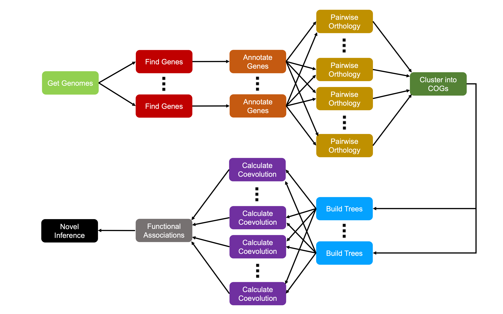

This tutorial has walked through a complete pipeline of comparative genomic analysis. By using this tool, we’ve been able to generate hypotheses of functional associations between genetic regions using only raw sequence data as input. Along the way, we’ve covered the following:
- Working with sequencing data, including alignment and visualization
- Finding and annotating genes from sequencing data
- Finding Clusters of Orthologous Genes (COGs)
- Reconstructing the evolutionary history of COGs
- Analyzing coevolutionary signal between COGs
This coevolutionary signal allows us to generate hypotheses about possible unknown functional associations between proteins. In the previous example, we were able to correctly identify a cluster of ureases using only sequencing data.
This pipeline works on both genes that have been previously
characterized and those that have not, meaning we can guide future wet
lab investigation with these predictions. Future work will investigate
ways to improve our predictions, so stay tuned to the
SynExtend package as it develops!
Implementation at Scale
While our analyses are designed to be scalable, they are not yet fast enough to be able to examine thousands of genomes within a single workshop. Since we eventually need to make comparisons between every pair of COGs, the task grows quadratically as more genomes (and thus more COGs) are analyzed. Because of this, we chose a smaller test set to showcase performance in this workshop.
However, our methods can scale to many more genomes. All of our methods are designed to be run in parallel across a supercomputer system. The majority of the methods have low CPU and memory requirements, and thus can be run on small (2-4GB memory) nodes. We have recently completed analysis of all available Streptomyces genomes, which can complete in as little as an hour given sufficient compute nodes.
Our pipeline of analysis looks like this:

Runtime Estimations
The following is a rough estimate of runtime considerations at each
stage of the pipeline. These examples use Streptomyces genomes,
which are roughly 7-9 megabases. Stages marked single are
only run once, whereas parallel are run multiple times.
“Runtime” denotes total runtime if single and runtime per
iteration if parallel. More details on each runtime
component are available on the corresponding pages.
For scaling, \(G\) is the number of Genomes, \(g\) is the number of genes, \(C\) is the number of COGs, \(g_C\) is the number of genes in a particular COG.
NJ, MP, and ML denote Neighbor
Joining, Maximum Parsimony, and Maximum Likelihood (respectively).
ML is more accurate than MP at the cost of
increased runtime, and the same is true of MP and
NJ. See the section on Phylogenetics
for more info.
| Pipeline Stage | Scaling | Single or Parallel | Streptomyces Example | Example Runtime |
|---|---|---|---|---|
| Get Genomes | \(O(G)\) | Single | 300 Genomes | ~60 sec |
| Find Genes | \(O(G)\) | Parallel | Single Genome | ~15 min |
| Annotate Genes | \(O(G)\) | Parallel | Single Genome | ~20 min |
| Pairwise Orthology | \(O(G^2)\) | Parallel | Pair of Genomes | ~10 min |
| Ortholog Pairs to COGs | \(O(g^2)\) | Single | All pairs from 300 Genomes | ~5 min |
| Align and Make Tree | \(O(C)\) | Parallel | Single COG | <1 sec (NJ) ~0.5 hr (MP) ~13 hr (ML) |
| Calculate Coevolution | \(O(C^2)\) | Parallel | Pair of COGs | ~5 sec |
| (Optimal) Total Runtime | — | — | 300 Genomes | ~1 hr (NJ) ~1.5 hr (MP) ~14 hr (ML) |
For this example, 300 Streptomyces genomes resulted in ~2.2 million genes, resulting in ~65k COGs. Overall runtime depends on the phylogenetic reconstruction algorithm used. Tree construction is performed using amino acid alignments.
Users interested in deploying these analyses at scale are encouraged to contact our lab for more information!
Thank you!
If you’ve made it through this entire tutorial, thank you for
following along! I hope this series was informative and useful to your
analyses. All code showcased here is actively being worked on by members
of our lab, especially the ProtWeaver and
ProtWeb functionalities. If you have any comments,
suggestions, or feature requests for ProtWeaver,
ProtWeb, or this tutorial, please feel free to either email
me at ahl27@pitt.edu
or open an issue on GitHub.